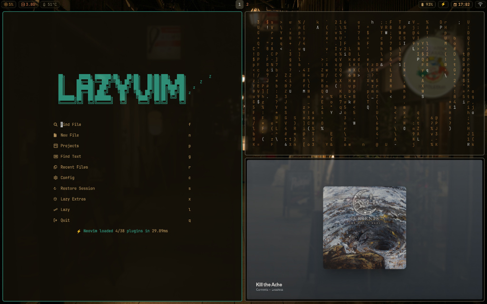
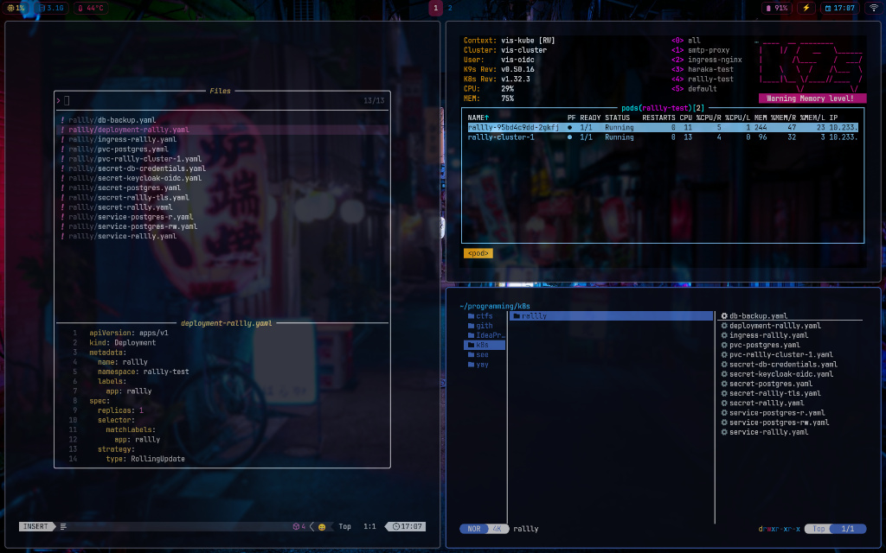
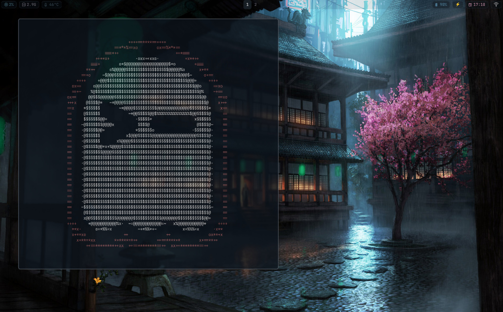

Arch Linux // Hyprland // Zsh // Pywal // Zellij
My daily driver on Arch + Hyprland. Everything is keyboard-driven, color-synced through Pywal, and managed with GNU Stow. Take what’s useful.



The Engine. A Wayland compositor with tiling, smooth animations, and per-monitor scaling. My window manager of choice.
The Terminal. Low-latency GPU-rendered terminal (6ms repaint, 1ms input delay). Pywal-themed, with custom search and scroll plugins, Vim-style window/tab management, and remote control enabled for Neovim integration.
The Multiplexer. Persistent terminal sessions with panes and tabs. Keeps long-running processes alive and layouts consistent.
The Editor. LazyVim-based config with LSP, Treesitter, and Telescope for fuzzy finding. My main editor for everything.
The Navigator. Terminal file manager written in Rust. Fast, with async image previews and Vim-style keybindings.
The Document Viewer. Minimal PDF viewer with Pywal theming and SyncTeX support. Clicking a line in the PDF jumps to the corresponding source in Neovim — making it a natural part of a LaTeX compile workflow.
The Daily Browser. Firefox-based browser with a clean, distraction-free UI. My go-to for general browsing, themed via pywalfox.
The Power Browser. Fully keyboard-driven with Vim-style navigation. Preferred for focused work — integrated with Bitwarden and Pywal. Falls back to Zen for sites that don't play nice.
The Status Bar. Highly customizable bar for Hyprland, styled dynamically with Pywal colors. Monitors workspaces, media, and system resources.
The Aesthetic. Generates a color palette from my wallpaper and applies it system-wide — Waybar, Kitty, and Dunst all stay in sync automatically.
The Display Manager. Automatically switches between display profiles on connect/disconnect. Configured for two setups: a docked dual-monitor layout (one rotated 90°) and a standalone laptop mode.
The Office Suite. Full-featured document, spreadsheet, and presentation editor. Configured with the night theme and GPU acceleration for a native feel on Wayland.
Everything runs from the keyboard, mostly through Super.
| Key Combo | Action |
|---|---|
Super + Return |
Terminal (Kitty) |
Super + B |
Browser (Zen) |
Super + Shift + B |
Browser (Qutebrowser) |
Super + E |
File Manager (Nemo) |
Super + Y |
CLI Files (Yazi) |
Super + D |
App Launcher (Wofi) |
Super + A |
Email (aerc) |
Super + T |
Tasks (taskwarrior-tui) |
| Key Combo | Action |
|---|---|
Super + N |
New Note (Neovim float) |
Super + Shift + N |
Search Notes (fzf) |
Super + C |
Clip to Scrapbook |
| Key Combo | Action |
|---|---|
Super + W |
Change Wallpaper (Pywal) |
Super + S |
Screenshot (Region) |
Super + Shift + S |
Screenshot (Full Screen) |
Super + P |
Power Menu |
Super + Alt + L |
Lock Screen (Hyprlock) |
Super + M |
Toggle Mute |
Super + Shift + C |
Clipboard History |
Super + Shift + M |
Monitor Layout (nwg-displays) |
Super + R |
Reload Hyprland |
| Key Combo | Action |
|---|---|
Super + Q |
Close Window |
Super + F |
Toggle Fullscreen |
Super + V |
Toggle Floating |
Super + H/J/K/L |
Move Focus (Vim keys) |
Super + Shift + H/J/K/L |
Swap Windows |
Super + Ctrl + H/J/K/L |
Resize Window |
Super + 1-9 |
Switch Workspace |
Super + Shift + 1-9 |
Move to Workspace |
Super + Tab |
Previous Workspace |
Alt + Tab |
Cycle Windows |
A collection of shell scripts in ~/.scripts/ that glue the environment together.
Interactive selector using fzf and swaybg. Applies a new wallpaper, regenerates Pywal colors, and reloads Waybar and Dunst.
Controls audio and backlight with pamixer and brightnessctl, with visual OSD feedback via Dunst.
Cycles between Performance, Balanced, and Power Saver modes with Waybar icon integration.
A Wofi frontend for cliphist — fuzzy-searchable clipboard history.
Wofi-based exit menu for Shutdown, Reboot, Suspend, and Lock.
Background daemon that sends a desktop notification if disk usage drops below 15%.
A minimal note-taking system built on Neovim and fzf. Create numbered notes, search existing ones, or save clipboard content directly to a scrapbook file.
Launches qutebrowser with a Bitwarden unlock flow via Wofi — handles unauthenticated, locked, and unlocked vault states before opening the browser.
Cycles through power profiles — Power Saver, Balanced, and Performance — using powerprofilesctl.
Warning: This script assumes a fresh Arch Linux install. It uses
GNU Stowto manage symlinks. Back up your existing~/.configbefore proceeding.
sudo pacman -Syu git
The folder name must be dotfiles for the symlinks to work.
git clone https://github.com/gab-dev-7/dotfiles.git "$HOME/dotfiles"
cd "$HOME/dotfiles"
Installs native and AUR packages, backs up existing configs, and stows everything.
chmod +x install.sh
./install.sh